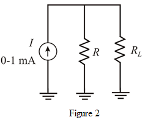

The maximum load voltage is,
The maximum load resistance value is,
If a  load connected, then the maximum voltage across load is,
load connected, then the maximum voltage across load is,
Which crosses, the maximum voltage limit  . To overcome this, connect a resister shunt with load resistor.
. To overcome this, connect a resister shunt with load resistor.
Draw the modified circuit as shown in Figure 2.

 is .
is .